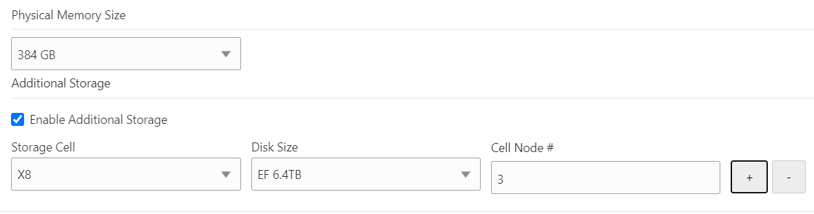
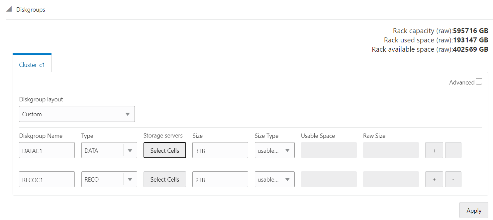
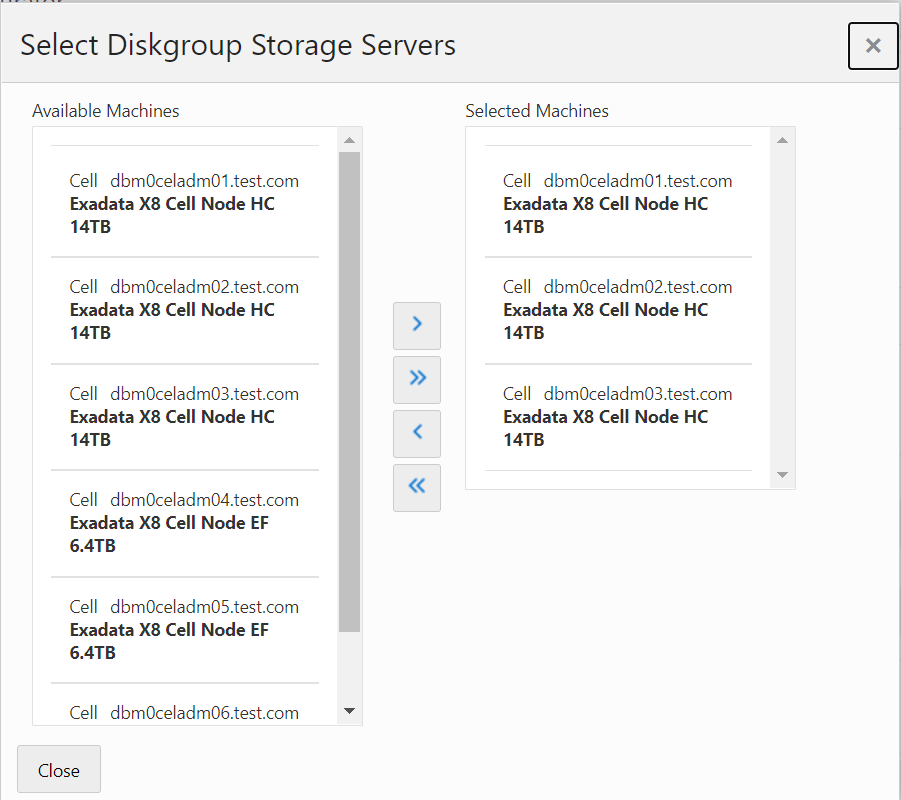

Earlier versions of OEDA didn’t allow you to have mixed cells in the configuration i.e. High Capacity (HC) and Extreme Flash (EF). The way to deal with that configuration was that deploy the system with either HC or EF cells and then manually configure the remaining cells.
I am not sure when did it change but the newer versions allow you have mixed type of cells in a single OEDA configuration. Once you select the hardware, there is an additional option called Enable Additional Storage, where you can select the other type of cells. The minimum number of cells has to be three to use this option. Also the cells that are at the bottom of the rack physically should be selected as main storage and the other cells should be added as additional storage as that is how OEDA builds the configuration files.
Once this is selected, on the Diskgroups screen, select Diskgroup layout as custom and you can create multiple diskgroups and select cells for each diskgroup (as EF & HC cells can’t be part of the same diskgroup).
Once the configuration is generated, it can be deployed with OneCommand without any manual intervention. A small feature but makes life easier by getting rid of all the manual steps.